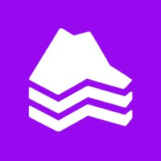

100% Local
Arquitectura Offline-First
Persistencia en AsyncStorage que garantiza apertura instantánea y lectura continua incluso sin conexión a internet.
Ecosistema digital educativo e interactivo que integra una aplicación móvil multiplataforma desarrollada en React Native (Expo) con una arquitectura de datos Offline-First y un flujo automatizado en n8n + Gemini API para producir fábulas infantiles ambientadas en mundos de bloques 3D estilo Minecraft y Roblox.
Persistencia en AsyncStorage que garantiza apertura instantánea y lectura continua incluso sin conexión a internet.
Pipeline automatizado que estructura guiones pedagógicos, moralejas, escenas visuales y metadatos JSON validados.
Adaptación visual inspirada en la estética de bloques de Minecraft y Roblox para conectar con la atención infantil.
Base de datos PostgreSQL con políticas Row Level Security y sincronización delta que descarga solo episodios nuevos.



Un flujo automatizado procesa la fábula clásica en Gemini API generando capítulos estructurados y prompts de escenas 3D.
Inyección automática en tablas PostgreSQL protegidas por RLS y almacenamiento de recursos gráficos optimizados.
La aplicación móvil compara sellos de tiempo y actualiza su caché local en segundo plano sin bloquear la interfaz.
Despliegue simultáneo del contenido como experiencia de lectura interactiva en la app y episodios animados en YouTube.